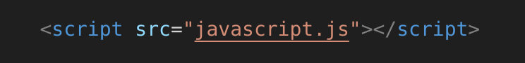
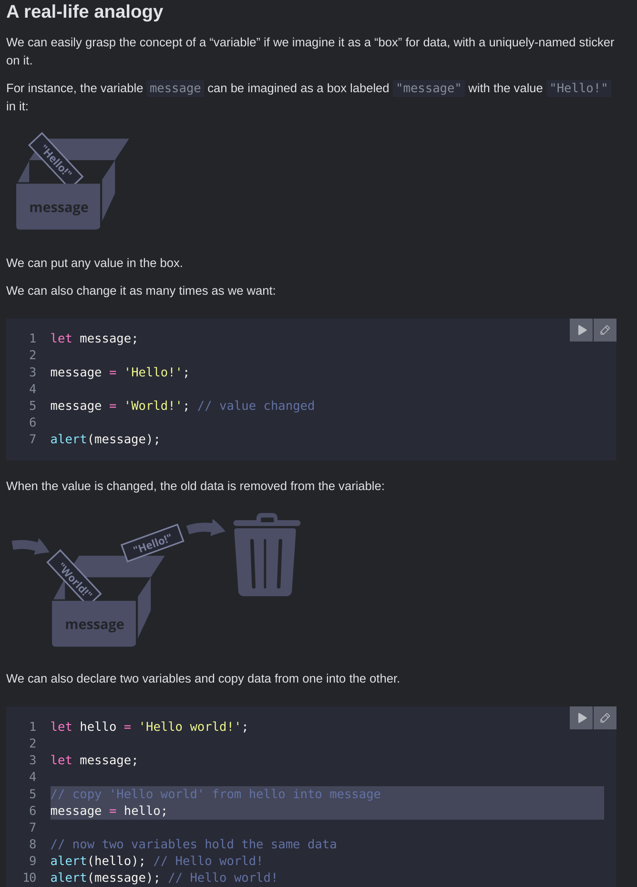

By right clicking the web page and inspecting it, you can find the console.log() under the console tab. This is the
command to print something to the developer console in the browser.
Another way to add JavaScript into the webpage is to add it using an external script much like the CSS style
sheet. ie

These are used for more complex scripts.
Variables
These are the storage containers for your code.
Until recently there was only one way to create one and that was the var statement. But in the newest JavaScript
versions we have two more ways - let and const. A named variable comes after let
A variable is a "named storage" for data, you can use let to create that variable.
See the raw script for this page to get an understanding By using the = we can assign data string do the variable let, this can be declared with multiple lines of
information ie
let user = 'John';
let age = 25;
let message = 'Hello';
A variable should only be declared once or else it will show up an error. The following analogy helps to
explain all of it.

camelCase is often used to name variables and only letter digits or $ or _ can be used. They cannot start with a
digit. For example this would be valid.
let $ = 1; // declared a variable with the name "$"
let _ = 2; // and now a variable with the name "_"
alert($ + _); // 3
Non latin language can be used but not recommend. Underscore and caps of the same word are two different
variables. There are also a list of reserved words, which produce an error when used. Naming things is important
and so naming them according to what they are is crucial but also remembering to keep it simple. eg userName,
shoppingCart. They need to be descriptive and concise.
const are used (instead of let) when you want a variable to stay the same. They cannot be reassigned else an
error occurs. This guarantees clear information to everyone. There is a widespread practice to use uppercase
constants for difficult to remember values. For example:
// ...when we need to pick a color
let color = COLOR_ORANGE;
alert(color); // #FF7F00
Numbers
>
Numbers play a huge role. The 'number' object is an instance which represents all standard numbers. This has
number of useful methods to manipulate numbers. Operands are the numbers which need operators to make them function.
The list of operators are:
Addition +
Subtraction -
Multiplication *
Division /
Remainder % This outputs the remainder of the integer division ie whats left of the number after it been
divided
Exponentiation ** This raises the number to the power of the one next to it ie 2 ** 5 = 10
Operators are 'unary' if they are coupled with just one operand, and are 'binary' when there are two operands.
String Concatenation
If the binary + is applied to "strings" then it merges them together. Here are some examples and their answers.
let s = "my" + "string";
alert(s); // mystring
alert(2 + 2 + '1' ); // "41" and not "221"
alert('1' + 2 + 2); // "122" and not "14"
The binary + is the only operator that supports strings in this way. Other operators work only with numbers and
convert their operands to numbers.
alert( 6 - '2' ); // 4, converts '2' to a number
alert( '6' / '2' ); // 3, converts both operands to numbers
Strings Strings and more Strings
Strings are pieces of text that are words wrapped in single quotes ('), double quotes ("), or backticks (`). These can be declared with a variable and their value returned. Backticks are slightly different as these allow embedding JS and to declare template literals over multiple lines. Javascript strings are primitive and immutable: All string methods produces a new string without altering the original string.
Embedding is done by JS in ${ } and the result will be included in the string. This can then be used to join variables together.
const one = "Hello, ";
const two = "how are you?";
const joined = `${one}${two}`;
console.log(joined); // "Hello, how are you?"
The ${ } can only be used with template literals (created using back ticks) and not to concatenate normal string, this can be used to make more readable code. The + operator can be used for normal string.
To use quotes within strings than other single, double quotes or backticks can be used within the string as long as it doesn't match the original string formation. Back slashes, known as escaping, can be used to include grammar that would normally be seen as a string i.e "I\'ve been a `good` boy". It has to be used just before the character.
Number(.) converts your data into numbers, particularly useful is if the data has come from a form input, with the
input type as text. The way to solve this problem is by passing the string value into the Number(.). constructor.
For example, the script below outputs 743, not 77.
let myNumber = "74";
myNumber += 3;
This is because "74" is a string so it needs to be put into a number constructor to output 77.
let myNumber = "74";
myNumber = Number(myNumber) + 3;
Conversely, String() will turn any number into a string.
Methods are bits of functionality that are built into the language of specific data, they allow you to replace and slice strings to obtain a particular outcome. These links below are a good resource to come back to when trying to remember certain methods:
Don't get tripped up by operator precedence as some operators are applied before others. Take the example, with num2 having the value of 50 and num1 being 10.
num2 + num1 / 8 + 2;
As a human being, you may read this as "50 plus 10 equals 60", then "8 plus 2 equals 10", and finally "60 divided by 10 equals 6".
But the browser does "10 divided by 8 equals 1.25", then "50 plus 1.25 plus 2 equals 53.25". To override the precedence then parentheses must be used:
(num2 + num1) / (8 + 2);
Precedence
Name
Sign
14
unary plus
+
14
unary negation
-
13
exponentiation
**
12
multiplication
*
12
division
/
11
addition
+
11
subtraction
-
2
assignment
=
As we can see, the “unary plus” has a priority of 14 which is higher than the 11 of “addition” (binary plus). That’s why, in the expression "+apples + +oranges", unary pluses work before the addition.
Increment and decrement operators Sometimes there will be a need to repeatedly subtract or add to a value. Note that this cannot be applied to a number directly. By adding ++ or -- before or after the value will plus or minus that value by 1 respectively
num1++
Putting the operators after the value will make the log return the current value then plus it, where as putting it before will do the math then throw out the current value.
The operators ++/-- can be used inside expressions as well. Their precedence is higher than most other arithmetical operations.
let counter = 1;
alert( 2 * ++counter ); // 4
Compare with:
let counter = 1;
alert( 2 * counter++ ); // 2, because counter++ returns the "old" value
Assignment operators assign a value to a variable. let is used in conjunction with a variable such as x or y and that value can then be permanently changed. These are used to help shortcut some code and keep it neater. There are quite a few of them but the basic ones are: += -= *= /=.
In all instances it simply means that, say it was plus operator, it would add the value on the right to the variable on the left, then return the new variable value.
Comparison operator are used when we want to run true/false tests, then act accordingly depending on the result of that test.
Operator
Name
Purpose
Example
==
Equality
Tests whether the left and right values are identical to one another
5 == 2 + 4
===
Strict-Non-equality
Tests whether the left and right values are not identical to one another
5 !== 2 + 3
<
Less than
Tests whether the left value is smaller than the right one.
10 < 6
>
Greater than
Tests whether the left value is greater than the right one.
10 > 20
<=
Less than or equal to
Tests whether the left value is smaller than or equal to the right one.
3 <= 2
>=
Greater than or equal to
Tests whether the left value is greater than or equal to the right one.
5 >= 4
Modify-in-place
We often need to apply an operator to a variable and store the new result in that same variable.
let n = 2;
n = n + 5;
n = n * 2;
This notation can be shortened using the operators += and *=:
let n = 2;
n += 5; // now n = 7 (same as n = n + 5)
n *= 2; // now n = 14 (same as n = n * 2)
alert( n ); // 14
Short “modify-and-assign” operators exist for all arithmetical and bitwise operators: /=, -=, etc.
Such operators have the same precedence as a normal assignment, so they run after most other calculations:
let n = 2;
n *= 3 + 5; // right part evaluated first, same as n *= 8
alert( n ); // 16
Conditionals
Conditionals allow the program/computer to do more involved things, they define conditions that are either true or false and then executes if that condition is true. In JavaScript we have the following conditional statements:
Use if to specify a block of code to be executed, if a specified condition is true.
Use else to specify a block of code to be executed, if the same condition is false.
if (condition) /* code to run if condition is true */
else /* run some other code instead */
Use if...else to specify a new condition to test, if the first condition is false.
if (condition) {
/* code to run if condition is true */
} else {
/* run some other code instead */
}
Here is an example of a basic if..else statement:
let shoppingDone = false;
let childsAllowance;
if (shoppingDone === true) {
childsAllowance = 10;
} else {
childsAllowance = 5;
}
It is perfectly ok to nest if...else statements inside of each other to show even more information. Even though the all works together each if...else statement works completely independently of the other one.
else if can be used if you want more than two choices or outcomes. Each additional choice requires an extra block to put between if () and else {}
See the linked JS
Use switch to specify many alternative blocks of code to be executed
Comparison operators > < >= <= == === != return a boolean value true or false. They can be assigned to a variable, just like any value:
let result = 5 > 4; // assign the result of the comparison
alert( result ); // true
Any value that is not false, undefined, null, 0, NaN, or an empty string ('') actually returns true when tested as a conditional statement, therefore you can use a variable name on its own to test whether it is true, or even that it exists (that is, it is not undefined.)
Strings are compared letter by letter and will go through each letter until it finds a difference. ie alert( 'Glow' > 'Glee' ); // true
The equality operand == converts string to a number value then shows the result. If a strict operand === is used then no conversion takes place.
The values null and undefined equal == each other and do not equal any other value.
Be careful when using comparisons like > or < with variables that can occasionally be null/undefined. Checking for null/undefined separately is a good idea.
Logical Operators
There are four logical operators in JavaScript || (OR), && (AND), ! (NOT), ?? (Nullish Coalescing).
|| (OR)
This operator checks to see if any arguments are true, if that is the case then it will return true. If that isn't the case then it will always return false. Every argument has to be false for it to return false. It will evaluate operands from left to right and will stop and return its original value upon the first one it comes across. If all operands were false, it will return the last operand. Below are two examples where it is used. In the second example, true is returned straight away so nothing happens then false is skipped and printed is alerted:
let firstName = "";
let lastName = "";
let nickName = "SuperCoder";
This returns if both operands are true and will return false if otherwise. When it comes to multiple && operators they have the same rules as || OR but will returns the first falsy value instead of the truthy one.
// if the first operand is truthy,
// AND returns the second operand:
alert( 1 && 0 ); // 0
alert( 1 && 5 ); // 5
// if the first operand is falsy,
// AND returns it. The second operand is ignored
alert( null && 5 ); // null
alert( 0 && "no matter what" ); // 0
The least one is returned if no falsys were found
alert( 1 && 2 && 3 ); // 3, the last one
In the hierarchy of precedence AND && sits higher than OR || and will be executed before. Don't use && instead of if.
! (NOT)
This operator accepts a single argument and returns a single inverse value. A double !! is sometimes used for converting a value into its boolean value by inversing the value with the first ! then inversing it again with the second !!